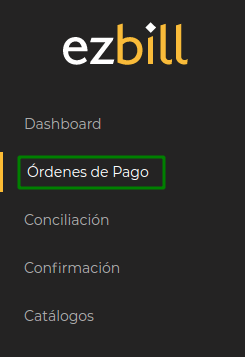
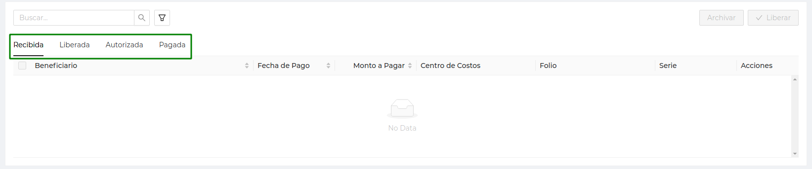
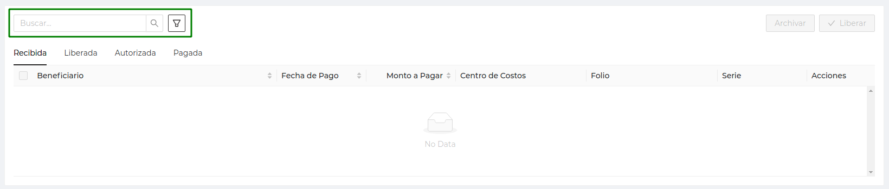
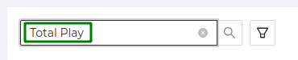
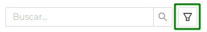
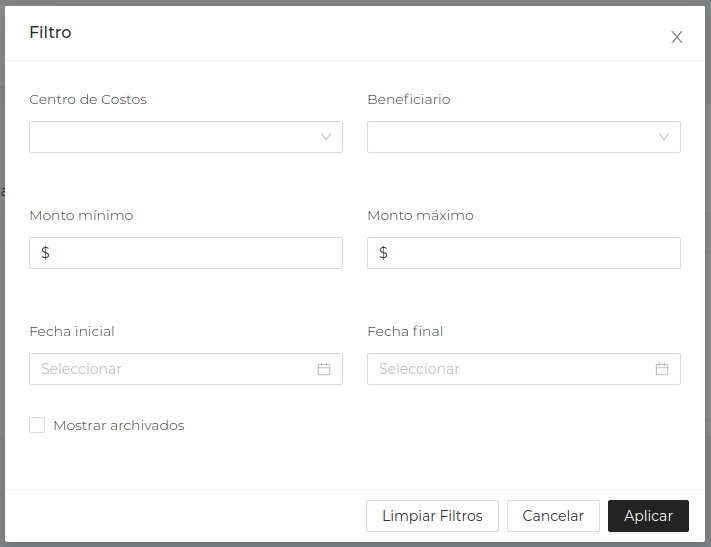

Órdenes de Pago
El principal objetivo de nuestra aplicación es brindar una herramienta de fácil gestión de los pagos de tu empresa y/o negocio, como:
- Servicios
- Compra de mercancías
- Pagos de nómina
- Comprobaciones de gasto
A esta información en EzBill le llamamos Órdenes de Pago
Esta es la sección principal de nuestra aplicación, y es por tal motivo, que al iniciar sesión la aplicación te llevará directamente a la lista de Órdenes de Pago.
A continuación haremos un recorrido sobre los elementos de esta operación e iremos describiendo la funcionalidad de cada uno.
Acceso desde el Menú
Para ir a la operación Órdenes de Pago puedes hacer clic en el menú principal.

SYNC SAT y Saldo de Bancos
Una de las principales características de EzBill es la funcionalidad de sincronizar con el SAT la información de tu o tus empresas, y poder descargar todos aquellos CFDI's recibidos y que son parte de tus pago por realizar.
Este proceso se realizar de manera automática por nuestro servidor, sin embargo es posible ejecutar de manera manual el proceso de sincronización

Para ejecutar de manera manual la sincronización, debes hacer clic sobre el botón con la leyenda SYNC SAT, y podrás conocer la fecha y hora del último proceso de sincronización que se haya ejecutado, ya sea de manera automática o bien de manera manual.
La tarjeta de Saldo en Bancos muestra en forma de carrusel la información del saldo en cada una de las cuentas vinculadas a una empresa de tu espacio en EzBill
Con las flechas Izquierda o Derecha podrás recorrer visualmente por las diferentes cuentas y conocer su saldo.
Una vez que se haya realizado la carga de los archivos e introducido la contraseña, debes hacer clic en el botón Subir, y es a partir de este momento que será posible ejecutar de manera automática o manual el proceso del SYNC SAT.
Listado de Órdenes de Pago
La tabla principal que se muestra en esta operación es un listado agrupado por estado de las Ordenes de Pago. Los grupos se muestran en pestañas, las cuales son:

- Recibida - Son aquellas órdenes de pago que se han ingresado a través del SYNC SAT o por algún otro mecanismo de los disponibles en EzBill.
- Liberada - Son aquellas órdenes de pago que han sido Liberadas o reconocidas por un Administrador como un pago por realizar.
- Autorizada - Son aquellas órdenes de pago que han sido Autorizadas por un Autorizador para que puedan ser programadas para pago.
- Pagada - Son aquellas órdenes de pago que han sido procesadas por un Pagador, y que indica que se ha realizado algún movimiento bancario como pago de la orden de pago.
Para poder visualizar las órdenes de pago según su estado, solo has clic en la pestaña correspondiente.
Las columnas informativas de las órdenes de pago que se muestran en el listado son:
- Beneficiario
- Fecha de Pago
- Monto a Pagar
- Centro de Costos
- Folio
- Serie
Filtro de Órdenes de Pago
Para facilitar el trabajo dentro del listado de las órdenes de pago, hemos diseñado un buscador para filtrar el listado y que puedas fácilmente localizar la información que requieres.
Existen dos formas de hacer búsquedas:
- Búsqueda difusa, la cual consiste en escribir algún criterio y la aplicación tratara de encontrar coincidencias a través de los datos de las Órdenes de Pago
- Filtros, la cual consiste en buscar un valor en un campo específico de las Órdenes de Pago.

Para hacer una Búsqueda difusa solo escribe algún criterio en la caja de búsqueda:

La información del listado de Órdenes de Pago se filtrará de acuerdo a las coincidencias encontradas
Para hacer una búsqueda por Filtro presiona el botón de filtro:

Aparecerá el asistente de filtros y podrás especificar el valor específico para el campo específico por el cual necesites filtrar la información.

Una vez que hayas establecido los distintos valores para tu búsqueda, haz clic en el botón Aplicar. La información en cada una de las pestañas de la lista de órdenes de pago, será filtrada a partir de los valores que hayas configurado como filtro.